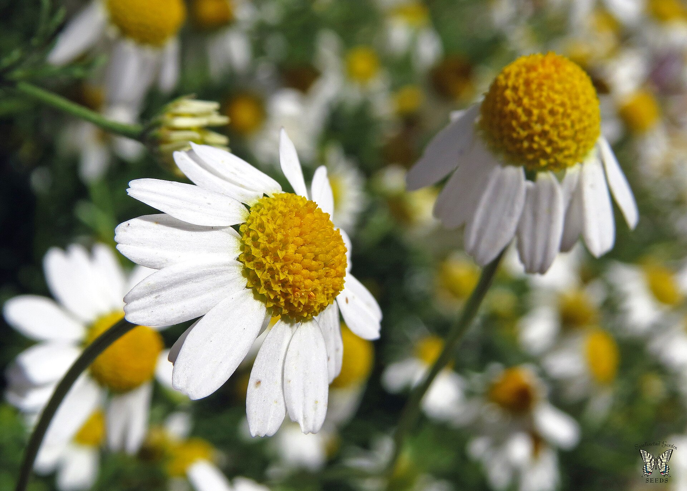

Цветы — система органов семенного размножения цветковых (покрытосеменных) растений. Цветок представляет собой видоизменённый, укороченный и ограниченный в росте спороносный побег, приспособленный для образования спор и гамет, а также для проведения полового процесса, завершающегося образованием плода с семенами. Цветок,будучи уникальным образованием по своей природе и функциям, поразительно разнообразен по деталям строения, окраске и размерам.Цветок, будучи уникальным образованием по своей природе и функциям, поразительно разнообразен по деталям строения, окраске и размерам.
